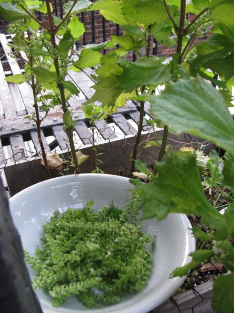
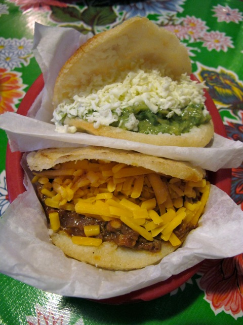
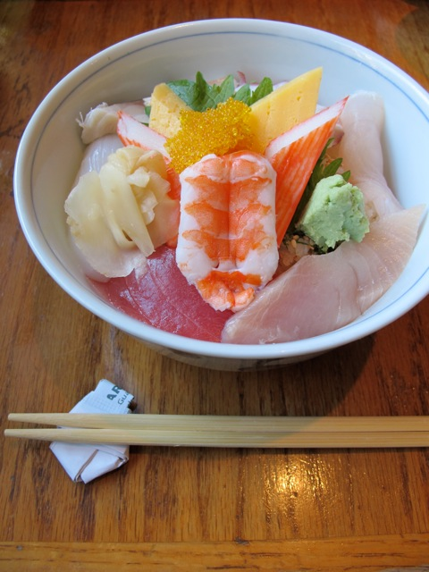
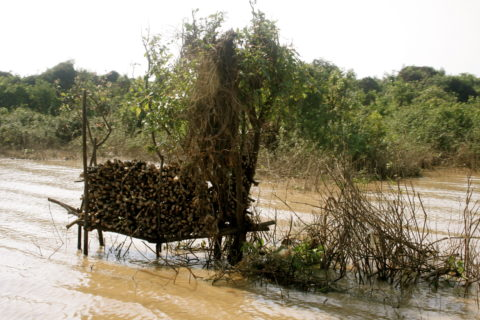
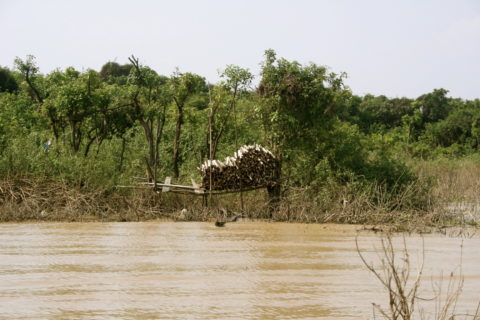
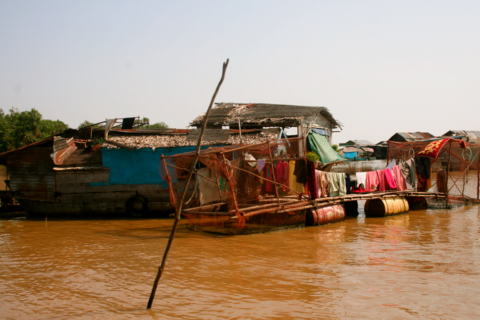
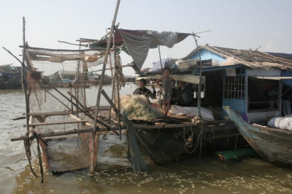
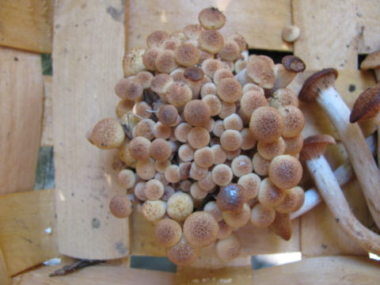

October 5, 2011 by mimecine
FYI, ETC, 20%, ETC
Love lies lost. It’s just like starting over. A
revised website, a
blog that has been revived, new stuff, new habits too. A new collection launching October 20th called “America 4”. A new batch of protests. A new country with the same leader. Hopes, dreams and old blue jeans. Smile to the world and the world smiles back at you. Use promo code “smile” at
www.kioskkiosk.com
- Comments closed
October 3, 2011 by Alisa

Lattice work seen in the south of France in a dead end town on the sea called Callelongue outside of Marseille. I found it inspiring, was it created by one man or many? Did it used to be common and a standard on all the houses? Look close, there are 4 patterns. Why oh why? Great colors.

<img class="alignnone size-large wp-image-2630" src="http://hello.kioskkiosk.com/wp-content/uploads/sites/4/2011/10/IMG_6222-600×450 cialis professional.jpg” alt=”” width=”600″ height=”450″ />
- Comments closed
September 30, 2011 by Alisa

Hi
America 4 is the next collection at Kiosk, launching October 20th. Hammock chairs, maple seltzer and syrup, compost bins, pewter spoons, tie dye, sheep skins, sleds, art, Bread and Puppet and lip balm, etc. Largely sourced in Vermont. See you soon – A.
In: America
- Comments closed
September 28, 2011 by Ming
Here in Montreal, we have a new bilingual publication that is printed on the paper place mats found in diners across the city. For those of you who aren’t familiar with this scene, diner culture in Quebec is still alive and kicking with one of the most popular late night snacks being poutine: an oily mess of fries topped with cheese curds (a squeaky specialty only found on this side of north america) and a slick of gravy. Delicious! Bienvenue/Welcome gives a voice to the many wonderful interactions that take place in these spaces and provides some interesting meal time reading. What better a way to digest?

Seat yourself at any diner in Montreal, and chances are this is what the placemat in front of you will read—a cheery invitation to the world of poutine and steamés. This chorus of greeting is also emblematic of the dynamic that makes this city so interesting. Montreal’s historic “two solitudes” are just two parts of the city’s ever expanding spectrum of city-dwellers. Diners, known in Quebec as casse-croutes, are a quintessentially North-American institution. However, their informality, low prices and long business hours invite hungry people from all walks of life, making them a site of cultural exchange. Bienvenue/Welcome wants to explore the individuals, objects and places that make up Montreal and invites all those who encounter it to explore it as well.
In: Canada, food, funny, Publication, Quebec
- Comments closed
September 27, 2011 by mimecine
Its that time of year again.. when the buds on my shiso plants are ready to be clipped! When they are not too soft and not too hard, just around when the little white flowers show up, I think it came early this year actually.. Today I am pickling them.
Here’s how:
Wash the clipped buds and drain, before stripping them from the stem. Soak them in salt water overnight, with a weight on them, to remove the bitterness. Squeeze all the water out and now add salt and ume plum vinegar to the buds, put the weight on it again and refrigerate for a week… Great mixed into rice for onigiri(rice balls)! If you don’t want to pickle them, they are also delicious chopped into salads, or leave them on the stem and fry as tempura!
- Comments closed
September 25, 2011 by yuki
I have a good news! My iPhone app “ Yuki eats NY” just launched! It is about eat-out guide in NYC based on my first book: “International Food Guide to NY” which I published in Japan 2006. People kept asking me to make an English version –so I’m very pleased to have this opportunity to share “Yuki eats NY” for the iPhone.
“I am what I eat” is my motto, and I truly care about every single meal I eat. I’m less interested in fancy settings, and more into authentic, delicious, and homemade food. I love being adventurous and discovering new flavors & dishes. I have been steadily eating my way across the City; sampling food from around the globe, cooking original recipes and recording it all in my Food Diary Blog 365 dishes as well.
It would make me so happy if you find a new spot or two from my guide to add to your favorites list. Hope to see you soon at one of the restaurants!
delicious & colorful Arepa sandwich
pork & chive dumplings for only $1!!!
beautifully served Chirashi Sushi
super crispy roast duck noodle
- Comments closed
September 22, 2011 by mimecine
KIOSK Window: Protesting the Execution of Troy Davis
This video was taken from the window of the KIOSK shop in the SoHo neighborhood in New York City. On the street people are marching in protest to the execution of Troy Davis by the state of Georgia the previous night.
Very questionable aspects of Davis’s case drew the attention of human rights organizations, religious and other leaders from around the world, and over a million people signed a petition to suspend his sentence of death. Despite this, Davis was killed Wednesday night.
For more information about Troy Davis:
http://en.wikipedia.org/wiki/Troy_Davis_case
http://youtu.be/IktIDqsmGeg
- Comments closed
by mimecine

While Cambodia does not reach nearly as low temperatures as those Scandinavian countries, there is still a need for fire wood…even if you live in the middle of a lake. Flipping through photos from my trip to Cambodia in 2010, I came across this unusual structure. A wood pile in the middle of Tonle Sap Lake.
Wood piles were not the only site seen floating on this lake. 
- Comments closed
by mimecine
Can you imagine living in a 10’x10′ house? Well Peter King, one of Vermonts leading tiny house experts can. Over the course of two days Peter taught Alisa, Marco & I what it takes to build one of these tiny dwellings. Here are a few photos of the house we constructed on Peter’s farm.
—

Barn siding on Peter's toolshed
 <img class="aligncenter size-legacy wp-image-2447" src="http://hello.kioskkiosk.com/wp-content/uploads/sites/4/2011/09/photo-125-480×358 achat cialis 10mg.jpg” alt=”” width=”480″ height=”358″ />
<img class="aligncenter size-legacy wp-image-2447" src="http://hello.kioskkiosk.com/wp-content/uploads/sites/4/2011/09/photo-125-480×358 achat cialis 10mg.jpg” alt=”” width=”480″ height=”358″ />


http://vermonttinyhouses.com/
- Comments closed
September 21, 2011 by mimecine
Honey mushrooms are out in full force this week! This past weekend we found several clusters of them in the forest, which I pickled and put in olive oil.. then today while driving I spotted a huge bunch off the road! SCREECH! Maybe stir fried with veggies? Honey mushrooms grow in clusters, have a white spore print, and show tiny little hairs growing on the cap.. They are called honey mushrooms because of their color, not their taste. but please, always identify without a doubt before eating!
- Comments closed